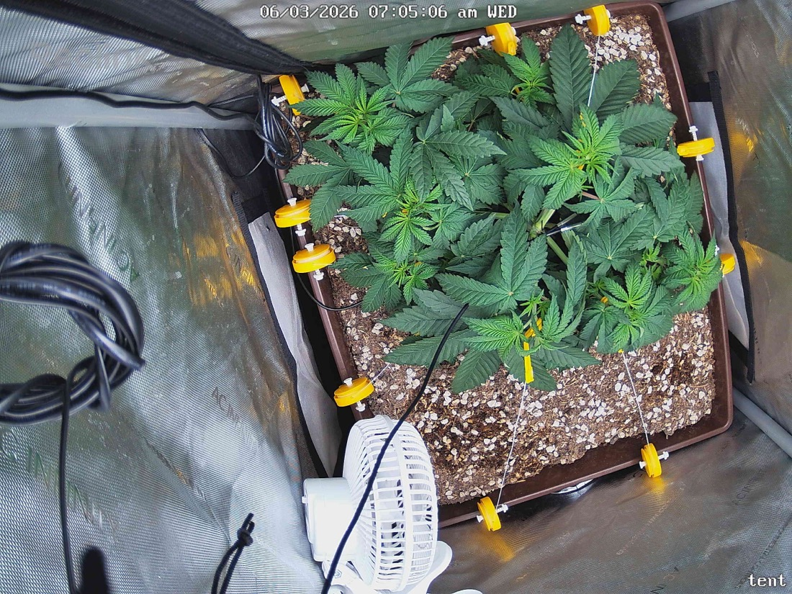

← All reports
Jun 3, 2026
Wed Jun 3, 2026 — 7:05 AM

Prognosis
Daily Prognosis — 2026-06-03
- Growth: Visible canopy fill since yesterday — interior nodes have pushed up noticeably, creating a denser, more uniform plate. LST tie-downs are still holding the lateral spread open, exposing more bud sites to direct light.
- Color: Deep, even green across the canopy. No new pale patches or interveinal yellowing vs. yesterday.
- Structure/posture: Leaves are flat and praying slightly — healthy response to the 600+ PPFD bump. No tacoing, cupping, or clawing. Tips look clean.
- Stress signs: None apparent. No bleaching on the upper-most leaves closest to the light, no edge burn, no droop. Soil surface looks appropriately moist (not soggy, not crusted) two days after the 2-gal bottom water.
- Pests/disease: Nothing visible — no spotting, webbing, powder, or chew marks.
- Phase check: ~5 weeks from germ, ~11 days post-top, actively under LST — canopy structure is right on track for a flip today. You've built a wide, even base with multiple equal-height colas, which is exactly what you want going into 12/12.
Suggested next actions:
- Flip to 12/12 as planned today; consider dropping light to ~500–550 PPFD for the first 2–3 days of stretch, then ramp back up as flower sites form.
- Log the flip date in the change log so stretch/flower-week math stays clean.
- Watch soil moisture closely over the next week — stretch + longer dark period often shifts water uptake.
Overall: Textbook pre-flip condition — healthy, symmetric, stress-free; green light to flip tonight.